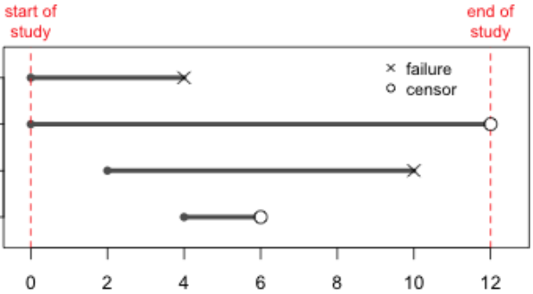

27 Survival Analysis
Is the Cluster of Deaths Significantly High?
- A town in Wisconsin has 5000 people who reach their 16th birthday, and 25 of them die before their 17th birthday.
- Many residents claim that the number is too high and suspect air pollution as a cause.
- Others suggest that the number of deaths vary from year to year, so it is no cause for concern.

27.1 Life Table
- A period life table describes mortality and longevity data for a hypothetical cohort.
- The data is computed with the assumption that the conditions affecting mortality in a particular year remain the same throughout the lives of everyone in the hypothetical cohort.
- For example, a 1-year-old toddler and an elderly 70-year-old live their entire life in a world with the same constant death rates that were present in a given year.
- An example of a life table is shown in Figure 27.1.


- The entire report can be downloaded at CDC Publications and Information Products.
- Mortality experiences are different for various gender and race groups, so it is common to have tables for specific groups.
- For example, Figure 27.2 below is a table for females in the United States.

- The basis year for the mortality rate in this table is 2018, as is highlighted in Figure 27.3.
- This life table has data for a cohort of 100,000 hypothetical people.

- The age ranges chosen for this life table include the following classes: \([0, 1)\), \([1, 2)\), \([2, 3)\), … \([99, 100)\), \([100, \infty)\).

- The probabilities of dying during the age interval are listed in the 1st column of the life table.
- For example, in Figure 27.5, there is a 0.000367 probability of someone dying between their 1st birthday and their 2nd birthday.

- The number of people alive at the beginning of the age interval is listed in column 2.
- As Figure 27.6 displays, among the 100,000 hypothetical people who were born, 99,435 of them are alive on their 1st birthday.

- The number of people who died during the age interval is listed in column 3.

- The total number of years lived during the age interval by those who were alive at the beginning of the age interval is listed in the fourth column.
- For example, the 100,000 people who were present at age 0 lived a total of 99,505 years (Figure 27.8).
- If none of those people had died, this entry would have been 100,000 years.

- The sixth column is similar to the fifth, but lists the total number of years lived during the age interval and all of the following age intervals as well.

- The final column lists the expected remaining lifetime in years, measured from the beginning of the age interval (Figure 27.10).

Example: Probability of Dying
- Use Figure 27.1 to find the probability of a person dying between age of 15 and 20.
\[\begin{align*} Pr(\text{die in } [15, 20)) &= Pr([15, 16) \cup [16, 17) \cup \cdots \cup [19, 20)) \\ &= Pr([15, 16) + Pr([16, 17)) + \cdots + Pr([19, 20)) \\ &= 0.000214 + 0.000253 + 0.000292 + 0.000329 + 0.000365 = 0.001453 \end{align*}\]
\[\begin{align*} Pr(\text{surviving between 15th and 20th birthdays}) &= \frac{\text{Number of people alive on their 20th birthday}}{\text{Number of people alive on their 15th birthday}} \\ &= \frac{99,151}{99,296} \\ &= 0.99854 \end{align*}\]
\[Pr(\text{die in } [15, 20)) = 1-Pr(\text{survive in } [15, 20)) = 1 - 0.99854 = 0.00146\]
27.2 Applications of Life Tables
Social Security
- There were 3,600,000 births in the U.S. in 2020.
- If the age for receiving full Social Security payment is 67, how many of those born in 2020 are expected to be alive on their 67th birthday? Check the report!

- Among 100,000 people born, we expect 81,637 of them will survive to their 67th birthday.
- Therefore, we expect that \(3,600,000 \times 0.81637 = 2,938,932\) people born in 2020 will receive their full Social Security payment.
Hypothesis Testing
- For one city, there are 5000 people who reach their 16th birthday.
- 25 of them die before their 17th birthday.
- Do we have sufficient evidence to conclude that this number of deaths is significantly high?

- The probability of dying for the age interval of 16-17 is 0.000405.
- This is a \(H_1\) claim. \(\small \begin{align} &H_0: \pi = 0.000405 \\ &H_1: \pi > 0.000405\end{align}\)
- \(\hat{\pi} = 25/5000 = 0.005\).
- \(z = \frac{0.005 - 0.000405}{\sqrt{\frac{(0.000405)(0.999595)}{5000}}} = 16.15\)
- \(P\)-value \(\approx 0\).
- There is sufficient evidence to conclude that the proportion of deaths is significantly higher than the proportion that is usually expected for this age interval.
27.3 Kaplan-Meier Survival Analysis
Survival Analysis
- The life table method is based on fixed time intervals.
- The Kaplan-Meier method
- is based on intervals that vary according to the times of survival to some particular terminating event.
- is used to describe the probability of surviving for a specific period of time.
- What is the probability of surviving for 5 more years after cancer chemotherapy?

Survival Time
- The time lapse from the beginning of observation to the time of terminating event is considered the survival time (Figure 27.11).

Survivor
- A survivor is a subject that successfully lasted throughout a particular time period.
- A survivor does not necessarily mean living.
- A patient trying to stop smoking is a survivor if smoking has not resumed.
- Your iPhone that worked for some particular length of time can be considered a survivor.


- Survival times are censored data if the subjects
- survive past the end of the study
- are dropped from the study for reasons not related to the terminating event being studied.

Example: Medication Treatment for Quitting Smoking
| Day | Status (0 = censored, 1 = Smoke Again) | Number of Patients | Patients Not Smoking | Proportion Not Smoking | Cumulative Proportion Not Smoking |
|---|---|---|---|---|---|
| 1 | 0 | ||||
| 3 | 1 | 4 | 3 | 3/4 = 0.75 | 0.75 |
| 4 | 1 | 3 | 2 | 2/3 = 0.67 | 0.5 |
| 7 | 1 | 2 | 1 | 1/2 = 0.5 | 0.25 |
| 21 | 1 | 1 | 0 | 0 | 0 |
- “Surviving” means the patient has NOT resumed smoking.
- As shown in Figure 27.13, the Subject 1 disliked the medication and dropped out of the study on day one.
- The table above also provides information regarding the study.
- 2nd row: Subject 2 resumed smoking 3 days after the start of the program.
- 3rd row: \(0.5 = (3/4)(2/3)\)
- 4th row: \(0.25 = (3/4)(2/3)(1/2)\)
- 5th row: \(0 = (3/4)(2/3)(1/2)(0)\)

Example: Counseling Treatment for Quitting Smoking
| Day | Status (0 = censored, 1 = Smoke Again) |
Number of Patients | Patients Not Smoking | Proportion Not Smoking | Cumulative Proportion Not Smoking |
|---|---|---|---|---|---|
| 2 | 1 | 10 | 9 | 9/10 | 0.9 |
| 4 | 1 | 9 | 8 | 8/9 | 0.8 |
| 5 | 0 | ||||
| 8 | 1 | 7 | 6 | 6/7 | 0.686 |
| 9 | 1 | 6 | 5 | 5/6 | 0.571 |
| 12 | 0 | ||||
| 14 | 1 | 4 | 3 | 3/4 | 0.429 |
| 22 | 1 | 3 | 2 | 2/3 | 0.286 |
| 24 | 0 | ||||
| 28 | 0 |

Kaplan-Meier Analysis